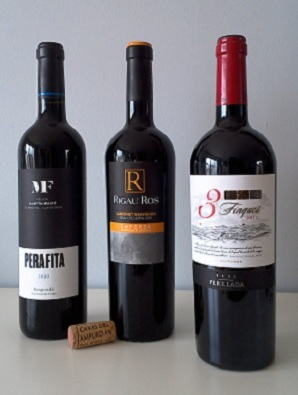
Rotweine Empordà
Von Castillo Perelada bis Martín Faixó: Rotweine, Weißweine und Cavas aus dem Empordà – persönlich vor Ort ausgesucht.
D.O. Empordà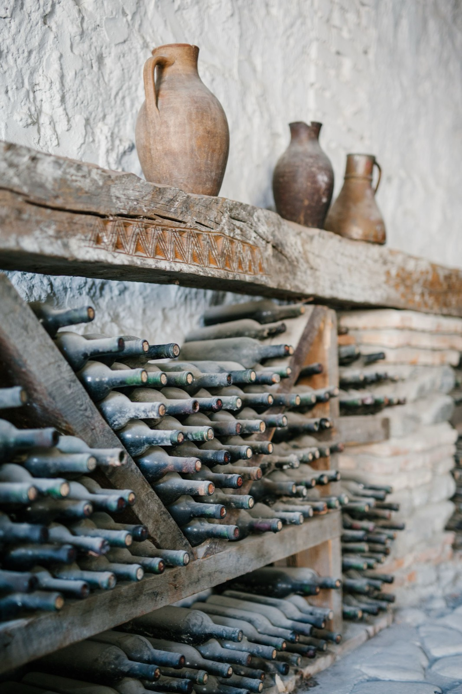
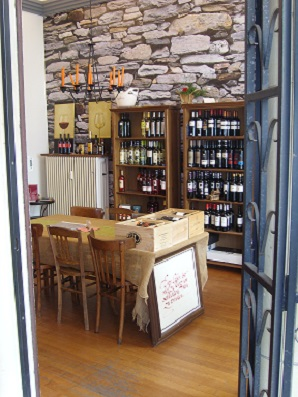
Spanische Feinkost · Weinhandel · Tapas-Catering
Weine und Cavas aus dem Empordà, Olivenöl direkt vom Erzeuger und Anchoas aus der Bucht von Roses – persönlich ausgesucht, zum Probieren im Laden und frisch zubereitet als Tapas-Catering für 3 bis 30 Personen.Weine, Olivenöl und Anchoas aus dem Empordà – persönlich ausgesucht, im Laden zu probieren, als Tapas-Catering für 3 bis 30 Personen.
Drei Säulen
Der Name ist Programm: Drei Dinge, die an der nordöstlichen Costa Brava zusammengehören – und bei uns in Saarbrücken in einem Laden stehen. Alles mit Herkunft, alles persönlich ausgesucht.
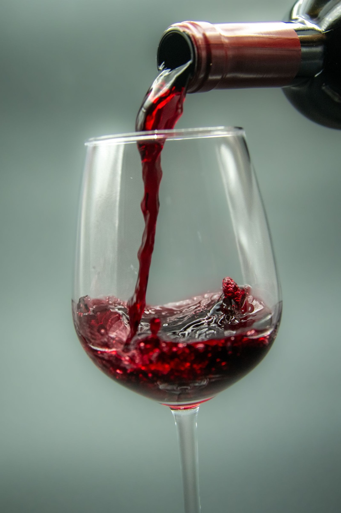
Schwerpunkt D.O. Empordà, dazu D.O. Catalunya, D.O. Cava und weitere Anbaugebiete Spaniens.
Zum Sortiment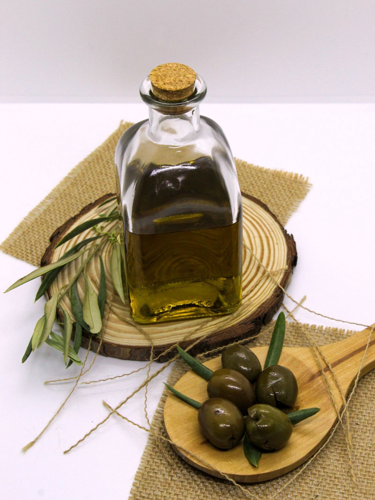
Direkt vom Erzeuger: Serraferran aus Ventalló und „Oli de Pau“ von Empordàlia – sortenrein oder als Cuvée.
Zum Sortiment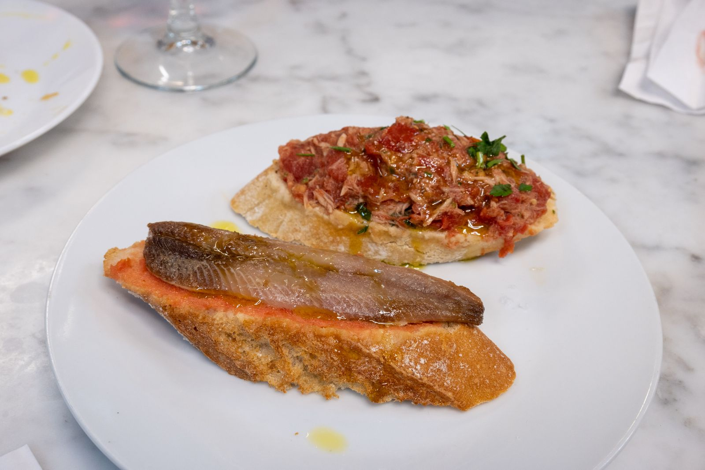
Anchoas und Boquerones von Marpla aus Roses, Fischpatés, Bonito und Stockfisch-Püree.
Zum SortimentSortiment
Jedes Weingut und jeder Produzent wird besucht, bevor etwas ins Regal kommt. Kleine Erzeuger statt Massenware – und im Laden darf probiert werden.

Von Castillo Perelada bis Martín Faixó: Rotweine, Weißweine und Cavas aus dem Empordà – persönlich vor Ort ausgesucht.
D.O. Empordà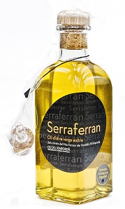
Sortenrein Arbequina (mild) oder Cuvée Arbequina/Argudell (kräftiger) – beim „Fest der Olive“ entdeckt, seitdem direkt vom Erzeuger.
Ventalló, Empordà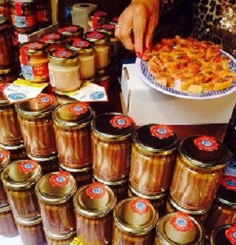
Sardellen in Olivenöl oder in Essig von Marpla, einem Kleinproduzenten aus der Bucht von Roses.
Roses, Costa Brava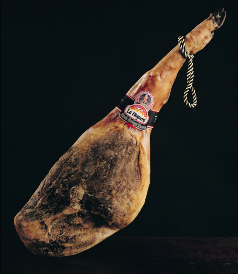
Duroc-Schinken aus Soria, Serrano und Iberico, Manchego, Fuet, Chorizo, Oliven, Patés, Membrillo und Reis für die Paella.
FeinkostPreise auf Anfrage – am besten im Laden, bei einem Glas und einem Stück Brot mit Öl. Wir beraten gern persönlich und schicken auf Wunsch unseren Newsletter mit Terminen und Angeboten.
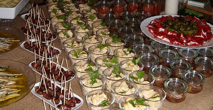
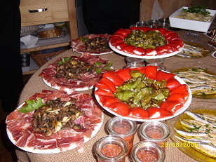
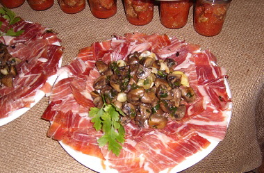
Tapas-Catering
Tapas-Menüs für 3 bis 30 Personen – alles frisch auf Bestellung zubereitet. Auf Wunsch mit Geschirr und dem passenden Wein, damit zuhause nur noch der Korkenzieher fehlt.
Catering anfragen
Kurz ausfüllen, abschicken – wir melden uns am nächsten Öffnungstag mit einem Vorschlag: Tapas-Auswahl, passender Wein und Preis.
Mehr als ein Laden
Ab 6 Flaschen – gern auch gemischt – bringen wir Ihren Wein innerhalb Saarbrückens nach Hause. Einfach anrufen oder eine E-Mail schreiben.
Lieferung anfragenNeben dem Verkaufsraum gibt es einen eigenen Raum für Weinproben, Cava-Tastings, Spanische Abende, Lesungen und Musikabende. Termine erfahren Sie im Laden und über unseren Newsletter.
Newsletter abonnieren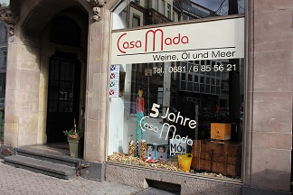
Über uns
Alles begann um das Jahr 2000 mit einer Liebe zum Empordà an der nordöstlichen Costa Brava – und mit Wein und Öl, die wir für Freunde aus dem Urlaub mitbrachten.
Am 1. Juli 2005 gründete Dagmar Margot Prinz daraus Casa Mada, am 7. Oktober 2005 öffnete der Laden in der Mainzer Straße 52. Seitdem führt sie ihn gemeinsam mit ihrem Mann Martin Schuch. Viele Kundinnen und Kunden sagen einfach: „der Spanier in der Mainzer Straße“.
Unser Grundsatz ist seit dem ersten Tag derselbe: Wir verkaufen nur, was wir selbst kennen. Jedes Weingut wird vor der Aufnahme ins Sortiment besucht, das Olivenöl Serraferran haben wir beim „Fest der Olive“ in einem Dorf am Pyrenäenrand entdeckt, und Marpla aus Roses haben wir erst nach einiger Überzeugungsarbeit als Lieferanten gewonnen.
Galerie
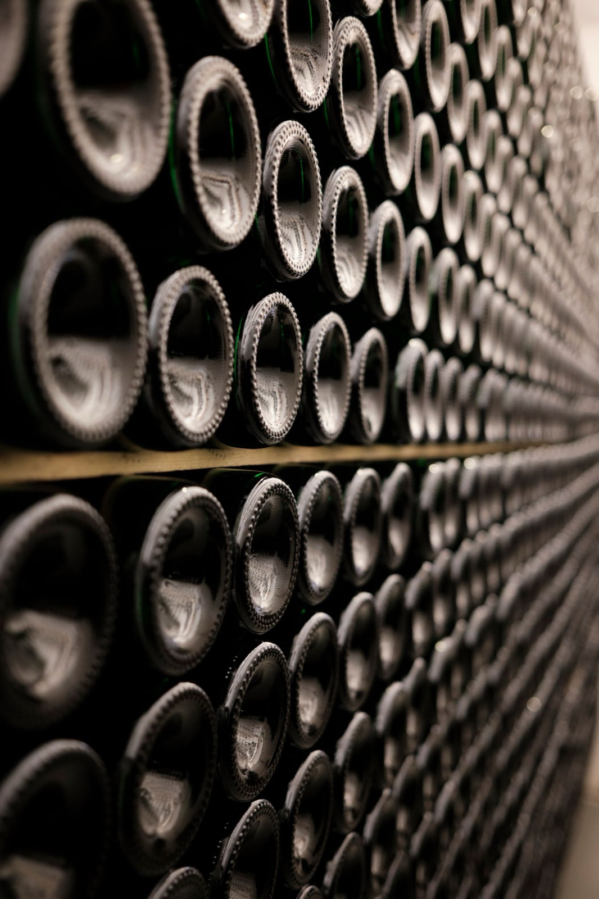
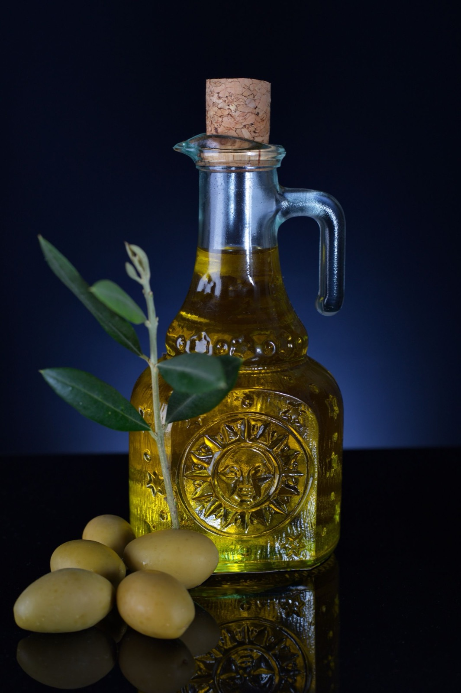
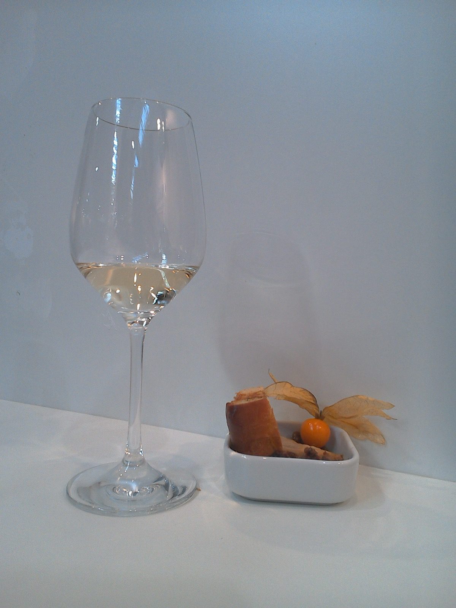
Kontakt
| Montag | geschlossen |
| Dienstag | 11:30–18:30 |
| Mittwoch | 11:30–18:30 |
| Donnerstag | 14:30–18:30 |
| Freitag | 11:30–18:30 |
| Samstag | 10:00–14:00 |
| Sonntag | geschlossen |
An gesetzlichen Feiertagen geschlossen.
Mit dem Auto: A620, Ausfahrt Bismarck-Brücke, über die Brücke, an der 2. Ampel rechts, nach ca. 150 m links. Gebührenpflichtige Parkplätze auf beiden Straßenseiten.
Route planen